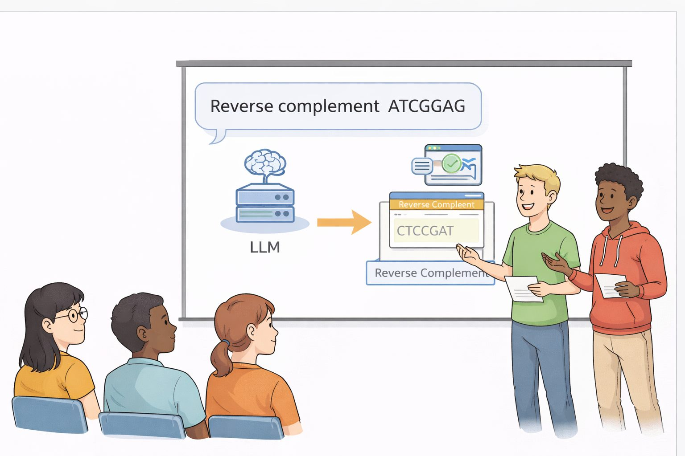
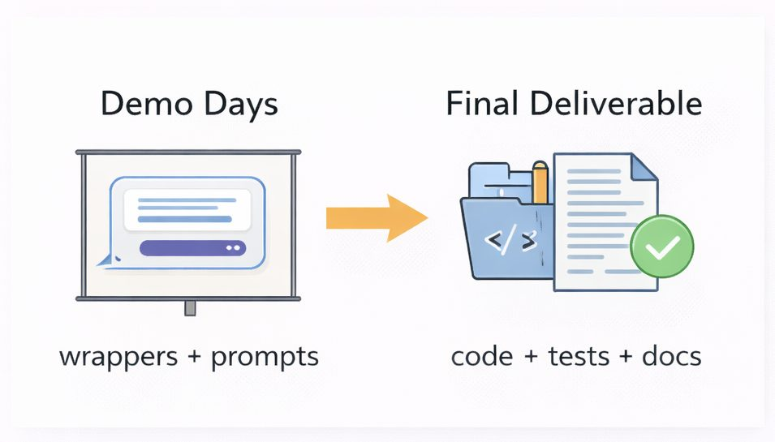

Small groups, on a concrete exercise tied to that day’s topic
Take real planning documents, propose a data structure for them
Formalizing a subject is how you find out whether you understood it
And you meet people, repeatedly, at low stakes
In several lectures we pause for an in-class activity tied to that day's topic. You work in small groups on something concrete — for instance, taking real wetlab planning documents and proposing a clean data structure to represent them. These serve two purposes. They deepen understanding of the technical subject by forcing you to formalize it, which is a much harder test of understanding than nodding along. And they create repeated low-stakes opportunities to work with different classmates, so you can discover shared interests and find a good team for the final project. Participation is required.
Four points about the in-class teaming activities: small groups on a concrete exercise, turning real documents into a data structure, formalizing as a test of understanding, and meeting potential teammates.
How teams work
Teams set before spring break, with a graduate student leading each
A shared theme and a shared tool suite
Every student owns a clearly defined individual scope inside it
You present together; you submit separately
Teams are formed before spring break, with one graduate student serving as the lead for each. Each team selects a thematic project area and works together on a shared MCP tool suite, but every student is responsible for a clearly defined individual scope within that larger system. The graduate leads coordinate, keep the project organized, and help combine material for demo day. After the break, teams work toward milestones, using class time and discussion section for planning. Teams present together on demo days, and at the end each student submits a complete codebase for their own scope.
Four points on team structure: teams formed before spring break with a graduate student lead, a shared theme and tool suite, an individually owned scope within it, and a joint presentation but separate submissions.
Demo days

On demo days you present with your group to show the overall structure and scope of the system you are building. You walk through example prompts, show how the model interprets them, and document which wrapped tools get called and what comes back. The focus is on the semantic wrappers and on the model's ability to understand your tools and plan appropriately — including what fails. The underlying implementations do not need to be finished. Demo day is about the interaction and the design, not about polish, and I would rather see a failure you understand than a success you cannot explain.
A demonstration in progress: a team showing example prompts, the model's interpretation of each, and the sequence of tool calls and results that follow.
What you turn in

A repository covering your individual scope
A working implementation — not wrappers over stubs
A README that says what you built and how to use it
Tests that demonstrate it is reliable
Due after demo days, at the end of RRR week
For the final deliverable you turn in a repository containing your individually scoped contribution. That means a complete working implementation, not just wrappers or partial stubs; thorough documentation in a README explaining what you built and how to use it; and automated tests that demonstrate reliability. It is due after demo days, because demo days are about showing system structure and the model-wrapper interaction, while the final submission is the finished, clean, documented, testable code you are responsible for.
Five deliverables for the final submission: a repository for the individual scope, a complete working implementation, a README explaining it, tests demonstrating reliability, and the deadline after demo days at the end of RRR week.